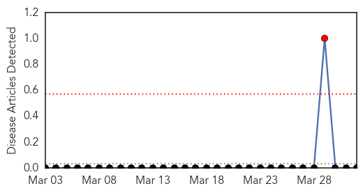

Dengue Fever
30-Day Web Trend
1 alerts, 0 warnings

30-Day Twitter Trend
0 alerts, 0 warnings

Article Locations

Article Confidences

Top Articles:
- 0.992
- Australian scientists discover unique way to prevent dengue fever - Xinhua
- 0.989
- Australian researchers find unique way to combat dengue
- 0.988
- Australian researchers find unique way to combat dengue
- 0.946
- Seasonal hike: Dengue control plan awaits govt approval
- 0.900
- News reader
- 0.882
- Guangzhou reports 8 dengue fever cases - Xinhua
- 0.873
- Indian Medical Association to set up a surveillance system for new disease outbreaks
- 0.612
- New class of insecticides offers safer, more targeted mosquito control
Top Tweets:
- 0.701
- Flavivirus news: After swine flu, PMC gears up to check dengue menace - Daily News & Analysis: ... http://t.co/jfTCKSSQtR pathogenposse
- 0.624
- Flavivirus news: Guangzhou reports 8 dengue fever cases - Global Times: NewswiseGuangzhou repor... http://t.co/t85EABj3x4 pathogenposse
Hemmorhagic Fever
30-Day Web Trend
1 alerts, 0 warnings

30-Day Twitter Trend
0 alerts, 0 warnings

Article Locations

Article Confidences

Top Articles:
-
No articles found for Apr 01, 2015
Top Tweets:
-
No tweets found for Apr 01, 2015